BLUE JACKETS
| Photo |
Name |
Number |
Position |
Shot |
Height |
Weight |
Birthday |
Hometown |
| 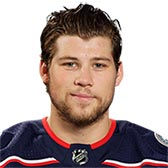 |
Josh Anderson |
77 |
RW |
R |
6' 3" |
221 |
May 7, 1994 |
Burlington, ON, CAN |
| 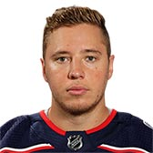 |
Cam Atkinson |
13 |
RW |
R |
5' 8" |
179 |
Jun 5, 1989 |
Riverside, CT, USA |
| 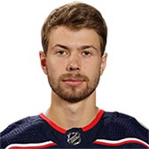 |
Oliver Bjorkstrand |
28 |
RW |
R |
6' 0" |
177 |
Apr 10, 1995 |
Herning, DNK |
|
Brandon Dubinsky |
17 |
C |
L |
6' 2" |
205 |
Apr 29, 1986 |
Anchorage, AK, USA |
| 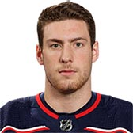 |
Pierre-Luc Dubois |
18 |
C |
L |
6' 3" |
207 |
Jun 24, 1998 |
Ste-Agathe-des-Monts, QC, CAN |
|
Anthony Duclair |
91 |
LW |
L |
5' 11" |
191 |
Aug 26, 1995 |
Pointe-Claire, QC, CAN |
| 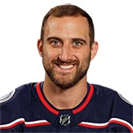 |
Nick Foligno |
71 |
LW |
L |
6' 0" |
202 |
Oct 31, 1987 |
Buffalo, NY, USA |
| 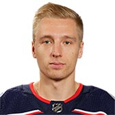 |
Markus Hannikainen |
37 |
LW |
L |
6' 1" |
200 |
Mar 26, 1993 |
Helsinki, FIN |
|
Boone Jenner |
38 |
C |
L |
6' 2" |
206 |
Jun 15, 1993 |
Dorchester, ON, CAN |
| 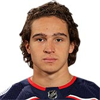 |
Sonny Milano |
22 |
LW |
L |
6' 0" |
195 |
May 12, 1996 |
Massapequa, NY, USA |
| 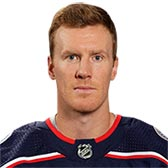 |
Riley Nash |
20 |
C |
R |
6' 1" |
190 |
May 9, 1989 |
Consort, AB, CAN |
| 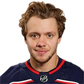 |
Artemi Panarin |
9 |
LW |
R |
5' 11" |
168 |
Oct 30, 1991 |
Korkino, RUS |
| 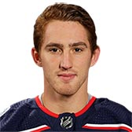 |
Lukas Sedlak |
45 |
C |
L |
6' 0" |
205 |
Feb 25, 1993 |
Ceské Budejovice, CZE |
|
Kevin Stenlund |
11 |
C |
R |
6' 4" |
210 |
Sep 20, 1996 |
Stockholm, SWE |
|
Alexander Wennberg |
10 |
C |
L |
6' 2" |
196 |
Sep 22, 1994 |
Stockholm, SWE |
| Photo |
Name |
Number |
Shot |
Height |
Weight |
Birthday |
Hometown |
| 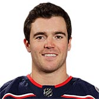 |
Scott Harrington |
4 |
L |
6' 2" |
207 |
Mar 10, 1993 |
Kingston, ON, CAN |
| 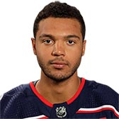 |
Seth Jones |
3 |
R |
6' 4" |
210 |
Oct 3, 1994 |
Arlington, TX, USA |
| 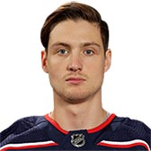 |
Dean Kukan |
14 |
L |
6' 2" |
186 |
Jul 8, 1993 |
Volketswil, CHE |
| 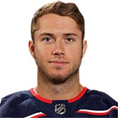 |
Ryan Murray |
27 |
L |
6' 1" |
205 |
Sep 27, 1993 |
Regina, SK, CAN |
| 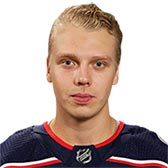 |
Markus Nutivaara |
65 |
L |
6' 1" |
191 |
Jun 6, 1994 |
Oulu, FIN |
|
David Savard |
58 |
R |
6' 2" |
227 |
Oct 22, 1990 |
St. Hyacinthe, QC, CAN |
| 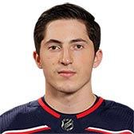 |
Zach Werenski |
8 |
L |
6' 2" |
209 |
Jul 19, 1997 |
Grosse Pointe, MI, USA |
| Photo |
Name |
Number |
Height |
Weight |
Birthday |
Hometown |
| 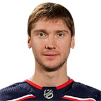 |
Sergei Bobrovsky |
72 |
6' 2" |
182 |
Sep 20, 1988 |
Novokuznetsk, RUS |
| 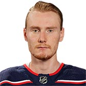 |
Joonas Korpisalo |
70 |
6' 3" |
182 |
Apr 28, 1994 |
Pori, FIN |